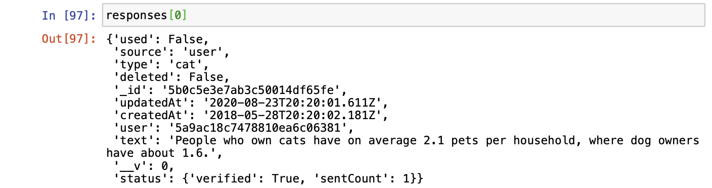
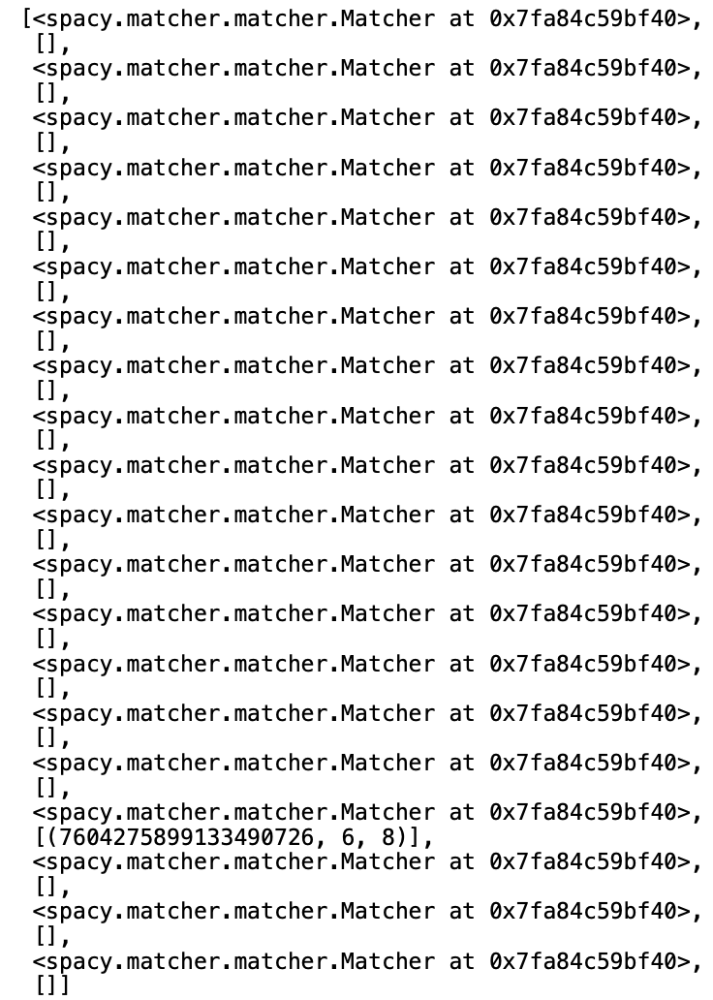
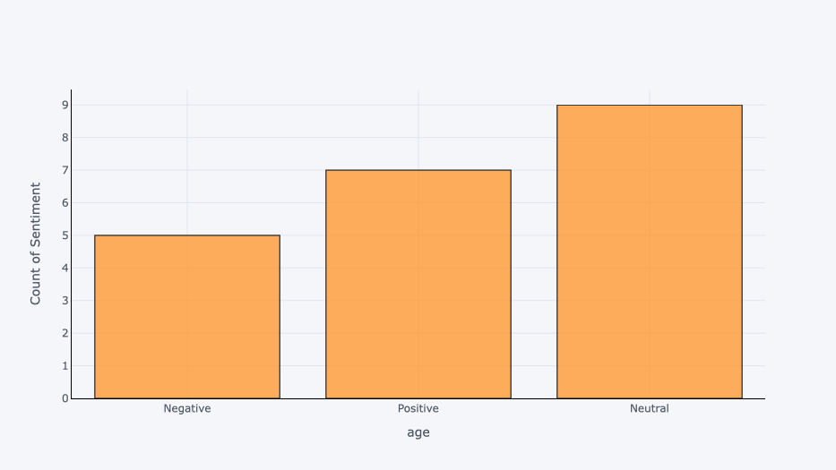
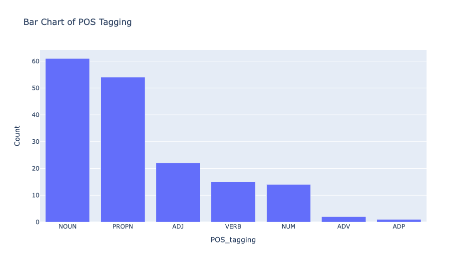

Classifying Random Cat Facts, NLP Tutorial
Natural Language Proccesing using SpaCy and Classifying Random Cat Facts Retrieved Via a Web API Into Positive, Negative or Neutral Using Sentiment Analysis.

Introduction
In this tutorial, we will be retrieving random cat facts using a Web API with the requests package in python.
Next We will use NLP with spaCy to tokenise, remove stop words, lemmatize our data.
Finally will use the cleaned data and then perform sentiment analysis using the textblob package to create a score for each fact and to see whether the score is:
- Positive: Score > 0
- Negative: Score < 0
- Neutral: Score = 0
GitHub
The notebook is available on my GitHub. I would suggest cloning the repository for anyone looking to work on the code themselves.
Required Packages
If the package is failing to import, you can resolve the issue using pip e.g.
!pip3 install pandas
# Import Packages and Libraries
import json
import requests
import pandas as pd
import spacy
import numpy as np
from textblob import TextBlob
import pandas as pd
import numpy as np
import spacy
from urllib.request import urlopen
from spacy import displacy
from spacy.matcher import Matcher
import plotly.express as px
import matplotlib.pyplot as plt
import itertools
from wordcloud import WordCloud
from collections import Counter
import cufflinks as cf
Retrieve Random Cat Facts
The API I am using to retrieve the random cat facts, automatically generates a random fact each time you call the specified URL. Each time it will append the results to responses.
def retrieve_cat_facts(url, no_facts):
'''
Retrieve Random Cat Facts Using API call
Append Into Responses
'''
responses = list()
for i in range(0,no_facts):
response = requests.get(f"{url}")
data=json.loads(response.text)
responses.append(data)
return responses, response
responses, response = retrieve_cat_facts(url = 'https://cat-fact.herokuapp.com/facts/random', no_facts = 20)
Output
The function will append all the responses from the function into dictionaries within a list. This is just a snapshot of the first dictionary within the list. 
You can use the following code below to check that the API call is succesful.
if response.status_code == 200:
print('Successful API call')
Load Pre-trained Model
nlp = spacy.load('en')
Create Lists of Lists of ‘Text’ Data
I decided to create a list of lists of all the random cat facts, as we are only concerned with the text data.
def create_list_of_lists(number_of_facts):
'''
Create A List Of Lists for the 'text' columns
'''
doc_responses = list()
for x in range (0, number_of_facts):
doc = nlp(responses[x]['text'])
doc_responses.append(doc)
return doc_responses
doc_responses = create_list_of_lists(20)
Length of Sentences
The following code will loop through the words of each sentence, before outputting the number of words in a sentence.
def getLengthSentences(number_of_facts, responses):
'''
Get Length of Sentence for each random cat fact
'''
for z in range (0, number_of_facts):
#passing text into nlp object
sentence = nlp(responses[z]['text'])
#Identify the sentences using attribute
sentences = list(sentence.sents)
# Reading the sentences
for sent in sentences:
print('Sentence: ', sent)
print("The length of the sentences:", len(sent))
getLengthSentences(20, responses)

Stop Words
Stopwords are the most common words in any NLP model. To analyze text data and build NLP models, these stopwords might not add much value to the meaning of the document. Generally, the most common words used in a text are
- “the”
- “is”
- “in”
- “a”
We will remove the stopwords from our text data before scoring our random cat facts.
stopwords = spacy.lang.en.stop_words.STOP_WORDS
# check the length of Stop Words
print("The length of stopwords:", len(stopwords))
for i in list(stopwords)[:20]:
print(i)
def remove_stopwords(doc):
'''Remove Stop Words From Text Data'''
final_doc = []
for sentence in doc:
print("Number of tokens in the doc:", len(sentence))
element = []
for word in sentence:
if not word.is_stop:
element.append(word)
final_doc.append(element)
print("Number of tokens after removing stopwords:", len(element))
return final_doc
doc_no_stopwords = remove_stopwords(doc_responses)

Remove Punctuation
Generally, you want to remove punctuation from text data, for this project we will remove punctuation. However, there are occasions where punctuation can be used to gain insight into text data.
def removePunctuation(doc):
'''
Remove Punctuation From Text Data
'''
final_doc = []
for sentence in doc:
element = []
for word in sentence:
if not word.is_punct:
element.append(word)
final_doc.append(element)
return final_doc
doc_no_punctuation = removePunctuation(final_doc)
Lemmatization
In simpler terms, a method that switches any kind of a word to its base root mode is called Lemmatization.
‘troubled’ -> Lemmatization -> ‘trouble’
‘neglected’ -> Lemmatization -> ‘neglect’
def lemmatization(doc):
'''
Apply Lemmatization On Text Data
'''
final_doc = []
for sentence in doc:
element = []
for word in sentence:
element.append(word.lemma_)
final_doc.append(element)
return final_doc
doc_lemmatization = lemmatization(doc_no_punctuation)
Comparison
doc_no_punctuation[0], doc_no_stopwords[0], doc_lemmatization[0]
From the below image you can see that each of our functions have worked as expected.

Part of Speech Tagging

def changeDataType(doc):
'''Change Data Type into One List for POS'''
final_doc = []
for sentence in doc:
str1 = ' '.join(sentence)
nlp_doc = nlp(str1)
final_doc.append(nlp_doc)
return final_doc
doc_one_list = changeDataType(doc_lemmatization)
def pos_tagging(doc):
'''POS Tagging on Text Data'''
doc_pos = []
for sentence in doc:
for word in sentence:
print (word, word.tag_, word.pos_, spacy.explain(word.tag_))
doc_pos.append(word.pos_)
return doc_pos
doc_pos = pos_tagging(doc_one_list)
doc_pos
Matcher
SpaCy also offers functionality to match on a pattern, here I have set to match on the words:
- Tom
- Jerry
# Import spaCy Matcher
from spacy.matcher import Matcher
# Initialize the matcher with the spaCy vocabulary
matcher = Matcher(nlp.vocab)
matches = []
for i in doc_lemmatization:
print(i)
str2 = ' '.join(i)
doc = nlp(str2)
# Define rule
pattern = [{'TEXT': 'People'}, {'TEXT': 'cat'}]
# Add rule
matcher.add('rule_1', None, pattern)
matches.append(matcher)
matches_found = matcher(doc)
matches.append(matches_found)
# Finding matches and passing the doc to the matches object
matches
You can see from the image below, we have been provided with a unique id, and the respective start element 6 and end element 8 of the match 
Sentiment Analysis
score_list = []
for i in doc_lemmatization:
str3 = ' '.join(i)
blob = TextBlob(str3)
for sentence in blob.sentences:
score_list.append(sentence.sentiment.polarity)
print(i,sentence.sentiment.polarity)
You can see the text after NLP next to the score where:
- 1 is the most positive cat fact
- -1 is the most negative cat fact

df = pd.DataFrame(score_list)
df['score'] = df[0]
del df[0]
df
df['Sentiment'] = np.where(df['score'] == 0,
'Neutral', '')
df['Neutral Flag'] = np.where(df['score'] == 0,
1, 0)
df['Sentiment'] = np.where(df['score'] > 0,
'Positive', df['Sentiment'])
df['Positive Flag'] = np.where(df['score'] > 0,
1, 0)
df['Sentiment'] = np.where(df['score'] < 0,
'Negative', df['Sentiment'])
df['Negative Flag'] = np.where(df['score'] < 0,
1, 0)
df['Sentiment']
df = df[:20]
df
Classifying the data into Positive, Negative and Neutral depending on the score.

Data Viz
Being a big fan of Data Viz, what a better way to end with some graphs. I am a big fan of Plotly, but you can adapt the code for your preferred data viz choices.
Pie Chart
fig = px.pie(df, names='Sentiment', title='Sentiment Analysis of Random Cat Facts', color_discrete_map={'Thur':'lightcyan',
'Postive ':'green',
'Neutral':'grey',
'Negative':'red'})
fig.update_traces(textposition='inside', textinfo='percent+label')
fig.show()

Histogram
cf.go_offline()
cf.set_config_file(offline=False, world_readable=True)
df['score'].iplot(
kind='hist',
bins=50,
xTitle='polarity',
linecolor='black',
yTitle='count',
title='Sentiment Polarity Distribution')

Bar Chart Of Length Of Sentences
len_sentence = []
for i in doc_lemmatization:
len_sentence.append(len(i))
=df['len_sentence'] = len_sentence
df['len_sentence'].iplot(
kind='hist',
bins=100,
xTitle='word count',
linecolor='black',
yTitle='count',
title='Review Text Word Count Distribution')

WordCloud
merged = list(itertools.chain(*doc_lemmatization))
#convert list to string and generate
unique_string=(" ").join(merged)
wordcloud = WordCloud(width = 1000, height = 500).generate(unique_string)
plt.figure(figsize=(15,8))
plt.imshow(wordcloud)
plt.axis("off")
plt.show()
plt.close()

Bar Chart Of POS Tagging
counts = Counter(doc_pos)
common = counts.most_common()
df_pos = pd.DataFrame(common)
df_pos['Count'] = df_pos[1]
df_pos['POS_tagging'] = df_pos[0]
fig = px.bar(df_pos, x='POS_tagging', y='Count', title='Bar Chart of POS Tagging')
fig.show()

Conclusion
That’s it for today. I hope you enjoyed this project as much as I have. Whilst there were limitations in the analysis due to the small sample size used, I believe the three things you can take from the project are:
- Introduction to APIs
- Introduction to NLP
- Introduction to Sentiment Analysis
If you have time, you can further explore this project by potentially using the dates and creating a time series based model looking to predict the average cat fact ‘score’ depending on the date.
Shaan Aucharagram
Data Science Degree Apprentice
Hi, I am Shaan, Data Science Degree Apprentice at Santander UK, technology and investment enthusiast. When I am not playing with the latest technology, you can usually find me playing football with my friends, travelling or spending too much time with my dog.